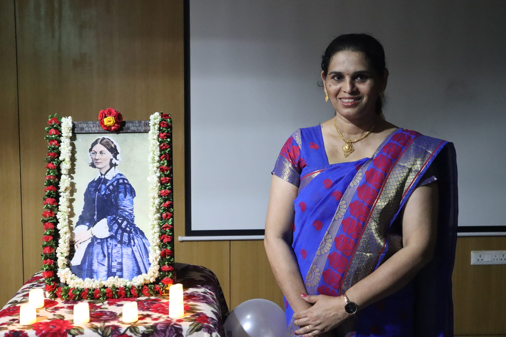
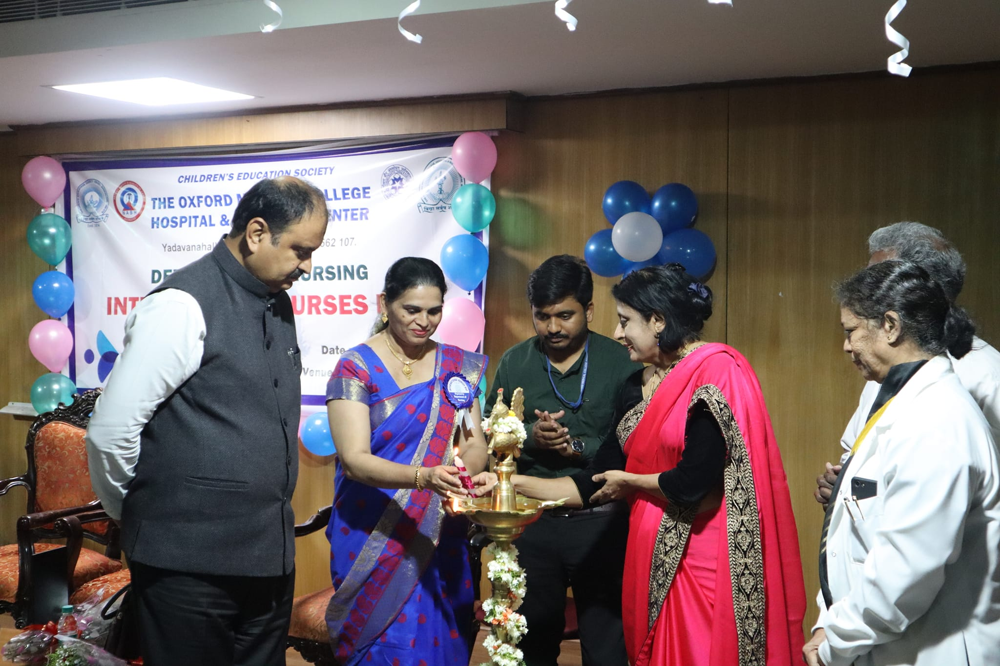
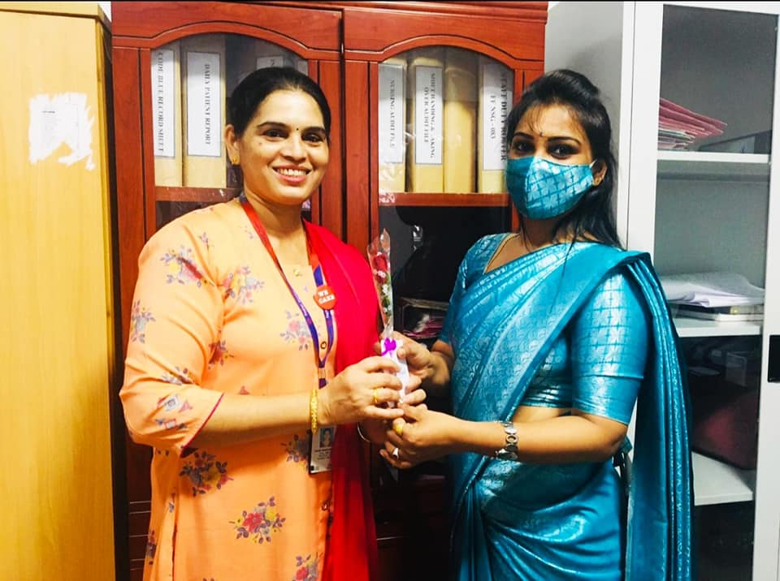

Work Experience
-
Jan 2022 – Till date:
Nursing Superintendent at The Oxford Medical College Hospital & Research Centre, Attibele, Bangalore
-
Oct 2013 – 14.01.2022:
Sagar Hospitals Bangalore
- Assistant Nursing Superintendent
-
Jan 2013 – Oct 2013:
Apollo Specialty Hospital Jayanagar
- Senior Nursing Supervisor
-
Dec 2007 – Dec 2012:
Apollo Hospitals Bangalore
- Nursing Supervisor – H D U (High Dependency Unit) Executive Wing & Platinum Wing
- (VIP & International patient handled)
-
2003 - 2007:
AL-Mouwasat Medical Services, Riyadh, Kingdom of Saudi Arabia
- Charge Nurse in Female Medical Surgical Ward
-
2002-2003:
St. Martha's Hospital, Nrupatunga Road, Bangalore -1
- Staff Nurse in Maternity Ward & OPD



While working with Apollo, I had played an important and major role in the following fields:
- 1.Contributed in setting up of Apollo Hospital Bangalore, specially OPD, Treatment Room & all the wards and ICUs
- 2.Played a key role to achieve JCI accreditation for Apollo Hospitals, Bangalore
- 3.Proactively identifying risk on time to initiate necessary action and prevent crisis
- 4.Well versed with all advanced clinical practices in nursing and advanced bio-medical equipment’s
- 5.Conducted campus interviews for the recruitment of nursing personnel in Bangalore
- 6.Involved in project work like – 5s programme, pain management, Hourly Rounding, Medication Safety, Infection Control, Code Blue, Reducing Procedure Errors, Handing Taking over with in ½ hour
- 7.Conducted one day Ortho workshop for the staff nurses with the help of Orthopaedic Doctors
- 8.Taken responsibility as a service line manager for Transplant (C O E)
- 9.Business Excellence: -Supported the organization by promoting people for Health check & IP admission
- 10.Taken responsibility as a head of the unit in Apollo Specialty Hospital Jayanagar and set the all unit (I C U Wards O P D, Treatment Room, and ER)
Responsibility Entrusted as a Nursing Superintendent:
- To coordinate the selection and recruitment procedure of nursing staff.
●Engaged in the recruitment process of the new staffs
- ●To submit a monthly report to the management about the status of the nursing staff (how many nurses left the job and how many need to be recruited)
- ●To organize an orientation program of the new recruits and communicate them the protocols and policies of the hospital
- ●To assess the performance of the new recruits and submit a report about the same to the management
To discharge the clinical functions efficiently.
- ●To be an expert practitioner and role model in the clinical area to utilize advanced skills in patient assessment
- ●To be personally responsible for keeping his/her own practice up to date and maintaining competency relevant to the role
- ●To develop and maintain good communication throughout the nursing teams and others involved directly or indirectly with patient care to ensure a patient-focused service
- ●To participate in the formulation of policies, protocols and guidelines.
- ●To actively contribute to the process of clinical risk management.
- ●support junior nursing staff with clinical decision making thereby enhancing their professional development.
To discharge the administrative functions efficiently.
- ●To monitor the duty schedule of the nursing staff
- ●To ensure that all critical care areas are adequately staffed
- ●To reschedule the duty roster in case of absence or shortage of staff
- ●To have a hospital-wide understanding of clinical activity, patient dependency, and skill mixes and bed availability
- ● To actively participate in formulation of policies, clinical guidelines, operational policy/procedures.
- ● To assist the Management in implementing any corrective programme necessary for adherence to financial budgets.
- ● To investigate patients’ complaints and provide a timely response in accordance with the hospital protocol.
- ● To be an active part in implementation of the hospitals admission and discharge protocol and ensure monitoring of the protocol.
- ● To ensure that the hospitals health & safety, fire and other statutory regulations are adhered to and update.
- ● To manage nursing staff within the hospital including responsibility for their recruitment appraisal, education, training and development.
- ● To ensure that all nursing personnel new to duty receive an adequate induction programme, and that they have a clear understanding of their duties, responsibilities and of the standard of performance expected of them at all times.
- ● To manage behaviour outside acceptable limits for whatever reason (i.e. emotional upset in staff, brusqueness to patients and colleagues, undignified behaviour, absenteeism, conflict etc.).
- ● To ensure the implementation of all hospital policies with particular reference to disciplinary procedures, grievance procedures, health and safety and incident reporting followed by RCA of the same.
To discharge responsibility for interpreting and implementing quality assurance initiative as per NABH Standards and ensure delivery of quality care to patient.
- ● Member of core committee-NABH.
- ● Engaged in formulation and analysis of quality indicators.
- ● Do analysis and RCA for medication errors and adverse events.
- ● Member of various hospital committees for quality improvement and patient safety.
- ● Ensuring safety of hazardous & inflammable materials, ensuring quality improvement in services.
- ● Involving in project works (5s programme, pain management, medication safety, infection control, code blue (individual disaster).
- ● Conducting orientation for the New Nursing staff.
- ● Regular training for Patient care assistants on bedside nursing care.